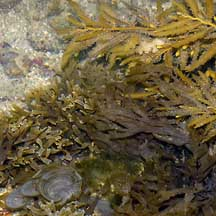

|
|
|
brown seaweeds text index | photo
index
|
| Seaweeds in general |
| Brown
seaweeds Division Phaeophyta updated Aug 08
Where seen? Large brown seaweeds like sargassum are more common on our Southern shores, but other brown seaweeds are also seen on our Northern shores. Like other seaweeds, brown seaweeds appear to be seasonal. At certain times, for example, the Southern shores are blanketed under a thick golden carpet of sargassum. Features: Brown seaweeds have green chlorophyll but this is masked by other pigments, in particular fucoxanthin, an orange carotenid pigment that gives their distinctive brown colour. Brown seaweeds may come in shades of brown, from light to yellowish, golden to dark brown. Brown seaweeds are only found in the sea and are not found in freshwater. Role in the habitat: Brown seaweeds provide shelter and food for small animals. The large sargassum seaweeds in particular may shelter tiny octopuses, shrimps and fishes. The Crosslandia slug (Crosslandia sp.) looks exactly like a sargassum blade! Human uses: Unlike red seaweeds and green seaweeds, few brown seaweeds are eaten directly by people. There are records that in the Philippines, Sargassum is widely used in the Ilocos region to enhance the taste of boiled rice or stewed fish. Some species of Sargassum and probably Turbinaria and Hormophysa are used as feritilisers and additives in poultry and cattle feed. Sargassum is also used as fish bait in basket traps and insect repellent. Various species of brown seaweed are also used as medicine for ailments ranging from children's fever, cholesterol problems, cleansing the blood, skin ailments. Extracts of brown seaweeds, however, are used extensively in our food. Brown seaweeds are a source of alginates used to make water-based products thicker, creamier and more stable. For example, alginates make smoother ice cream, dripless paint and cosmetics. The alginic acid in the extract absorbs large quantities of water and thus has an emulsifying effect. Alginates are extracted from larger brown seaweeds which are more numerous in colder waters thus the major producers are in countries bordering colder waters such as the US, France, Norway, UK and Japan. Kelp is an important source of this product. Annual world production of alginates is estimated at 27,000 tonnes from 500,000 tonnes of raw material, valued at around US$230million (as at 2000). |
 Various brown seaweeds Sentosa, Apr 04
|


| Division Phaeophyta on Singapore shores text index and photo index of brown seaweeds on this site |
Links
|
|
|